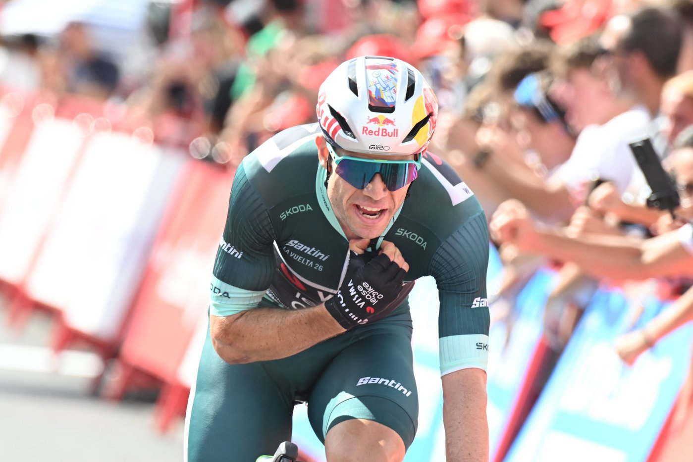
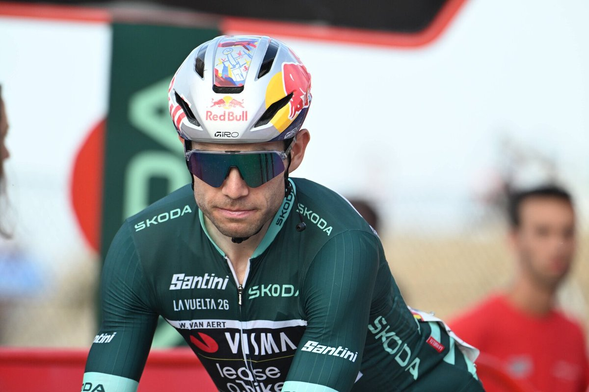
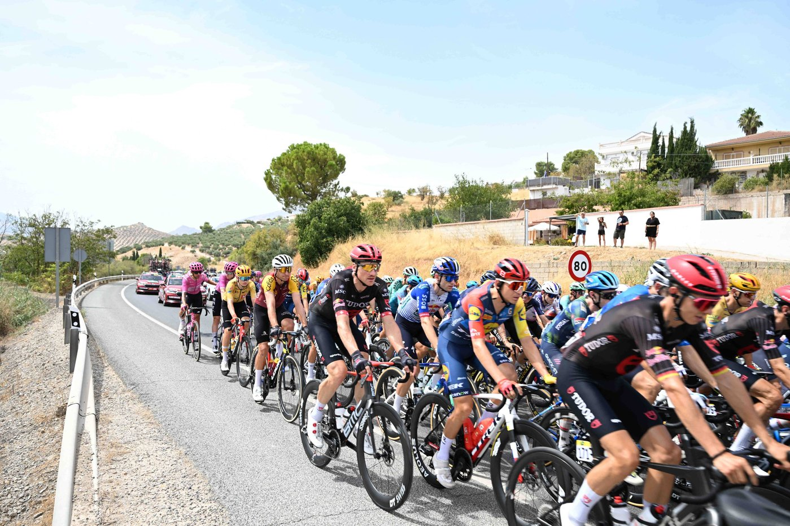

King of Córdoba
7 Sep 2026
Stage 15, Sun 6 Sep: Palma del Río → Córdoba, 110.2 km heat-cut. Van Aert 2:35:00 from the five.
Monday 7 Sep 2026
Stage 15, Sun 6 Sep: Palma del Río → Córdoba, heat-cut to 110.2 km (was 189.7). Winner Wout van Aert (Visma) 2:35:00. 2. Alessandro Romele s.t. 3. Thibau Nys s.t. 4. Ramses Debruyne s.t. 5. Andreas Leknessund s.t.
Red Mas 52:05:56. Gall +2:06. Roglič +2:10. Carapaz +4:24. Onley +5:44 (white, +0:30 on Omrzel). Green van Aert 267 (Brennan 159, Romele 153). Polka Buitrago 69. No Stage 15 abandons. Today Mon 7 Sep: rest day. Tomorrow Stage 16, Tue 8 Sep: Cortegana → La Rábida, 181.1 km (hilly open, flat coastal finish; crosswinds possible).
Forty degrees and a protocol slash that dumped almost 80 km — and Visma still turned Córdoba into a hunt. They kept the early 11 on a short leash, shredded the bunch on Puerto Artafi, and when Van Aert jumped after the Santa María de Trassierra sprint he dragged Romele and Nys onto Leknessund and Debruyne. Five for the win; nobody stuck an attack past the green jersey.
Nys went early under the kite. Van Aert came around for his second win in three stages — fifth career Vuelta stage, fifth Visma win this race. GC stayed frozen: Mas banks the rest day with 2:06 on Gall and Roglič four seconds further back. Roglič also picked up a bottle fine on the hottest day. Week three opens with sprint/crosswind bait into La Rábida, then Sevilla, then the 32 km chrono.

7 Sep 2026
Stage 15, Sun 6 Sep: Palma del Río → Córdoba, 110.2 km heat-cut. Van Aert 2:35:00 from the five.

7 Sep 2026
Second win in three stages. Brennan still second on points; Romele climbs to 153 after runner-up.

7 Sep 2026
Extreme Weather Protocol cut 79.5 km. Visma still lit Puerto Artafi. Mas unchanged into the rest day.